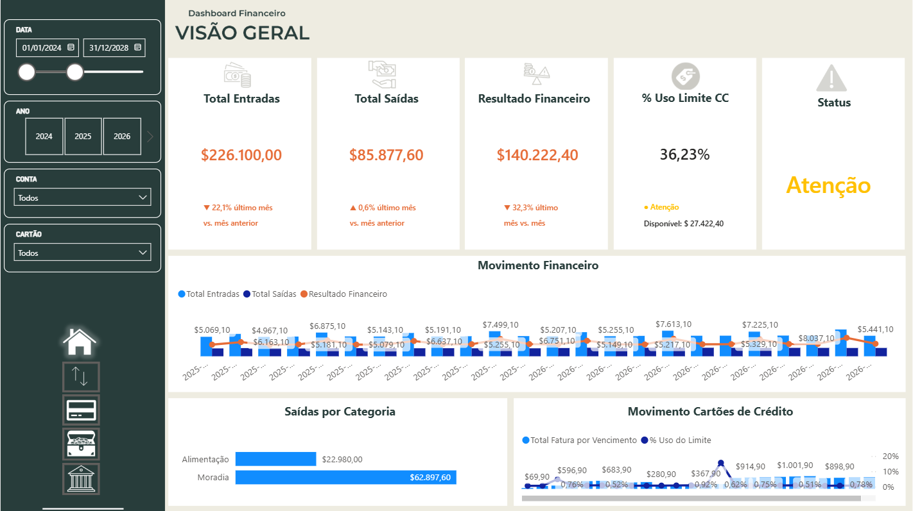

Overview
Summary of the main financial indicators, including income, expenses, balance, period trends, and transaction distribution.
A personal finance analytics solution developed in Power BI to consolidate cash flow, credit cards, loans, and key financial indicators into a clear, interactive experience.

The project centralizes financial information and transforms transactional data into clear, useful indicators for financial monitoring and decision-making.
The Financial Dashboard was designed to organize and analyze information related to income, expenses, bank accounts, credit cards, and loans.
The solution uses a structured analytical model and DAX measures to provide a consistent view of financial performance across different periods and categories.
In addition to technical development, the project focuses on visual hierarchy, intuitive navigation, responsive presentation, and support for Brazilian Portuguese and US English.
The main challenge was to combine different financial subjects into a consistent data model without sacrificing clarity, usability, or analytical depth.
Organize transactions, accounts, cards, and loans from different structures into a standardized analytical dataset.
Create reliable calculations for income, expenses, balances, invoices, installments, and outstanding loan amounts.
Present complex financial information through an organized interface with clear hierarchy and focused visual elements.
Provide equivalent versions in Brazilian Portuguese and US English while preserving the same calculations and navigation logic.
The dashboard combines high-level indicators with detailed analysis to help users understand financial performance and identify relevant trends.
Consolidated value of financial inflows within the selected period.
Total outgoing transactions classified by period and expense category.
Difference between income and expenses for the current analytical context.
Percentage of income remaining after the deduction of total expenses.
Analysis of invoice amounts, available limits, and spending by category.
Outstanding loan amounts, paid installments, and remaining payment obligations.
Average monthly spending based on the selected analytical period.
Distribution of expenses across the main financial categories.
Each page addresses a specific set of financial questions while maintaining a consistent visual and navigational experience.

Summary of the main financial indicators, including income, expenses, balance, period trends, and transaction distribution.

Analysis of income and expenses over time, with comparisons between periods and detailed financial categories.

Monitoring of card invoices, available credit limits, usage percentages, and expenses by category.

View of loan contracts, installments, payment progress, deadlines, and outstanding amounts.
Navigate through the dashboard pages, apply filters, and explore the financial indicators directly from this case study.
The project follows a structured data workflow covering extraction, transformation, modeling, calculation, visualization, and publication.
Financial transactions, accounts, credit cards, categories, and loan records.
Data cleansing, type conversion, standardization, and transformation.
Dimensional structure, relationships, date table, and analytical organization.
Measures, indicators, visualizations, navigation, and report publication.
The project combines data preparation, modeling, calculations, visual design, documentation, and cloud publishing.
Development of the analytical model, visualizations, navigation, and report pages.
Creation of measures, indicators, percentages, time comparisons, and financial calculations.
Data cleaning, transformation, standardization, and preparation.
Query logic, structured data preparation, and relational data concepts.
Tables, relationships, dimensions, facts, and analytical context.
Cloud publication and public embedding of the interactive report.
Source control, documentation, and public presentation of the technical project.
Development of the responsive case study and integration with the portfolio.
The report was developed in Brazilian Portuguese and US English to demonstrate language localization while maintaining the same business logic and visual consistency.
The project strengthened the connection between data modeling, business rules, visual design, documentation, and user experience.
A well-structured data model simplifies DAX calculations and improves the reliability of report interactions.
Income, expenses, invoices, loans, and balances must follow consistent business definitions across every page.
Indicators, charts, filters, and details need a clear priority to help users interpret the information efficiently.
A bilingual report also requires consistent terminology, formatting, navigation, labels, and user context.
A documented repository and a structured case study make the technical decisions easier to understand and maintain.
Although the project is complete, its architecture allows the solution to evolve with additional data sources, analyses, and automation.
Visit the GitHub repository to review the documentation, project structure, technical decisions, and development details.